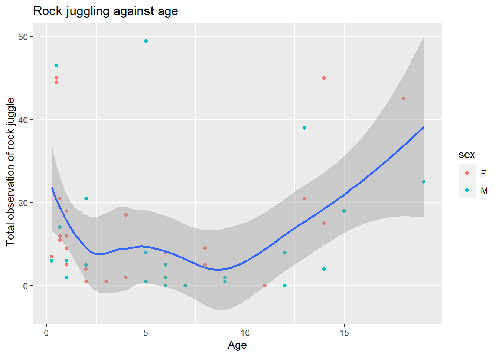
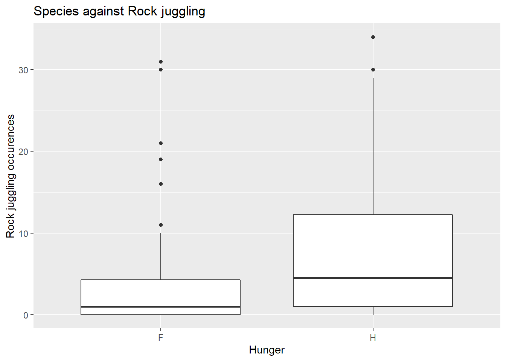

Rows: 50 Columns: 14
── Column specification ────────────────────────────────────────────────────────
Delimiter: ","
chr (6): site, species, group.ID, ID, agecat, sex
dbl (8): age, rj.total, total.obs, rj.front, rj.back, rj.roll, rj.wall, rj.sent
ℹ Use `spec()` to retrieve the full column specification for this data.
ℹ Specify the column types or set `show_col_types = FALSE` to quiet this message.
Rows: 96 Columns: 14
── Column specification ────────────────────────────────────────────────────────
Delimiter: ","
chr (6): site, species, group.ID, ID, sex, hungry
dbl (8): age, rj, total.obs, rj.front, rj.back, rj.roll, rj.wall, rj.sent
ℹ Use `spec()` to retrieve the full column specification for this data.
ℹ Specify the column types or set `show_col_types = FALSE` to quiet this message.
Importing data from Allison et al. (2020) about rock juggling in to different species of otter.
# A tibble: 2 × 2
sex Mean_rock_juggling
<chr> <dbl>
1 F 14.7
2 M 12.2
Plotting the age against the amount of rock juggling between the sex.
plot_juggling <-ggplot(data_juggling, aes(x = age, y = rock_juggling), fill = sex)+geom_point(aes(colour = sex))+geom_smooth()+labs(x ="Age",y =" Total observation of rock juggle",title ="Rock juggling against age")plot_juggling
`geom_smooth()` using method = 'loess' and formula 'y ~ x'

plot_hunger <-ggplot(data_hunger, aes(x= hungry, y = rock_juggling))+geom_boxplot()+labs( x ="Hunger",y ="Rock juggling occurences",title ="Species against Rock juggling")plot_hunger

References
Allison, Mari-Lisa, Rebecca Reed, Emile Michels, and Neeltje Boogert. 2020. “The Drivers and Functions of Rock Juggling in Otters.” Dryad. https://doi.org/10.5061/DRYAD.RN8PK0P64.